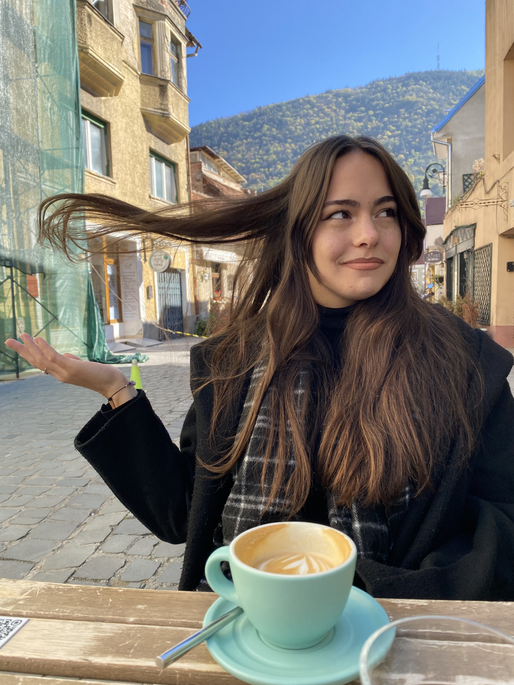

20 octombrie 2024
Book Coffee Shop
💜 Te iubesc pentru nebunia ta 💜
Normele sociale sunt un lucru bun. Ne mentine comportamentul si caracterul într-o limita, pana într-o linie foarte fina dintre bun simt si lipsa de respect.
Totuși, daca o luam din alta perspectiva, e chiar atât de bine sa te comporți după cum spune societatea ca e bine? Pana la urma si o comunitate întreagă poate
greși, la fel ca si o persoana individuală. In fine, ce vreau sa zic cu asta e ca te iubesc. Consider ca suntem un cuplu care nu se bazează doar pe norme sociale,
care face ceea ce simte, care are ca scop principal final sa fie fericit. Îți mulțumesc pentru ca alături de tine pot fi cum simt ca vreau sa fiu în momentul
respectiv. Ne îndrumăm dezvoltarea si caracterul, fără sa ne umilim prin judecare.